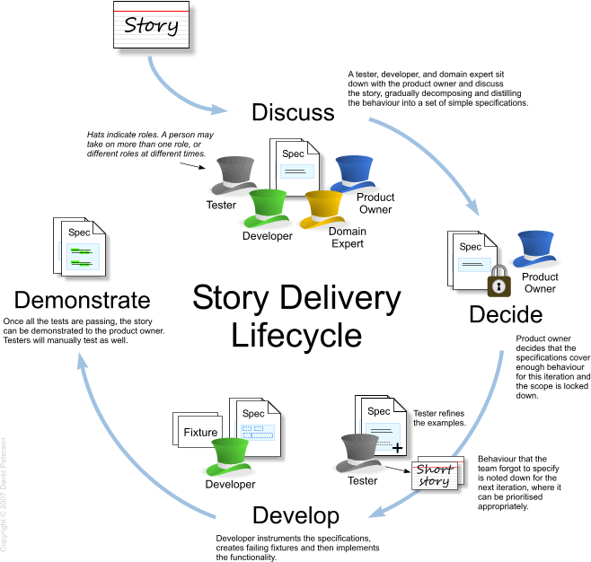

FAQ
- Who developed Concordion?
- How is Concordion licensed?
- Is there a mailing list?
- Is there a twitter account?
- How do I report defects or submit enhancement requests?
- Where is the source code repository?
- How do I collaborate with development of Concordion?
- Are there any good articles on Concordion?
- How do I fashion the test output into a presentable form?
- How does Concordion differ from the Fit Framework and FitNesse?
- How does Concordion differ from Selenium?
- What is the difference between scripting and specifying?
- Why not use Groovy, JRuby or some other scripting language in
- Isn't HTML a bit clumsy?
- Why not use a wiki or Word documents instead?
- Are there any tools to help me edit Concordion specifications?
- Can I extend Concordion with my own commands?
- Can you outline a story-driven process with Concordion?
- What can't Concordion test?
- Is your recommended process like a series of mini waterfalls?
- How do I publish Concordion output on Jenkins?
- How do I use complex expressions in my Concordion specifications?
- Does Concordion itself have active specifications?
Who developed Concordion?
Concordion was originally developed by David Peterson, an agile consultant based in London, UK. The idea was sparked by conversations with testers and developers, in particular Nat Pryce and Steve Freeman, while working at Easynet (BSkyB) in 2006. Concordion has been ported and further extended by several other developers - particularly Nigel Charman (based in New Zealand) who designed the Concordion Extensions API.
Please use the mailing list for questions about Concordion.
How is Concordion licensed?
Concordion is licensed under the Apache License, v2.0. See here for the license text.
Is there a mailing list?
Yes, on Google Groups. Join here. We also have a developer list for discussing development of Concordion core and extension code.
Is there a twitter account?
Yes!
How do I report defects or submit enhancement requests?
In Concordion's Issues List.
Where is the source code repository?
It is hosted on GitHub: Main Project Page, all sub-projects. The current development version (potentially unstable) can be cloned as follows:
git clone https://github.com/concordion/concordion.git
How do I collaborate with development of Concordion?
Firstly, you should create an issue for your enhancement request.
Concordion uses a "Fork & Pull" model for collaborative development. If you have changes that you would like us to consider for introduction to Concordion, you will need to fork the repository, commit and push your changes to your forked project, and send us a pull request referencing the URL of the issue that you created.
Please note that, in order to keep Concordion clean and minimal, we consider all enhancement requests carefully. Should your enhancement not be appropriate for Concordion core, you may wish to package it as a Concordion extension.
See README-DEVELOPERS.txt in the concordion repository for the development standards.
Are there any good articles on Concordion?
-
Concordion tutorial / review
— Tomo Popovic, Methods and Tools, Summer 2012 -
Concordion Integration with Jenkins
— Jack Low, May 2014 -
Concordion vs. Cucumber and Java Based Acceptance Testing
— Oliver Wehrens, October 2009 -
Concordion: Agile Acceptance Testing with free-form text
— Gojko Adzic, August 2008
How do I fashion the test output into a presentable form?
By default, the output of Concordion goes to the temp directory, but
you can change the location with the JVM variable "concordion.output.dir".
If you run all your tests then you'll get a complete set of coloured
output HTML files, which you can publish on a web-server or whatever.
To allow navigation, use the
breadcrumbs
naming convention and add <a href="..."> links between related specs.
See the Concordion specs for an example.
If you want to use custom CSS or JavaScript, or include images or other resources, in your Concordion output, you will need to write a simple extension.
How does Concordion differ from the Fit Framework and FitNesse?
The Fit Framework was the inspiration for Concordion. I used it for a couple of years before I decided to develop Concordion with the following aims:
- Improved readability of documents
- More "opinionated" (scripting is actively discouraged)
- Easier to use
What I've tried to do in Concordion is place a stronger emphasis on writing specifications of requirements, rather than test scripts. When you use Concordion, the scripting needed to test the requirement is hidden in the fixture code. I've explained this elsewhere but basically the reason you want to make a distinction is that it means you can change the implementation and know that you are still meeting the requirement. Test scripts mix up the requirement with implementation details.
(See "Scripting Makeover" for a typical example of a FitNesse acceptance test and my take at a Concordion equivalent specification.)
You can write active specifications with Fit, but it doesn't make it easy for you. Because of the way Fit uses inheritance, its fixture code is cumbersome, so developers tend to write as few fixtures as possible. This leads to generic fixtures that can be used in multiple specifications. Though this sounds like a good thing, it usually means that the examples in the specifications are copy-and-paste jobs and not well-focused. Irrelevant detail causes all the problems associated with duplication as well as making the examples harder to follow. In addition, having generic fixtures tends to lead to scripting.
With Concordion the fixture code is much simpler and every specification has its own unique fixture. Because you're not sharing fixtures, it encourages you to focus the examples in the specifications much more carefully. To remove duplication across fixtures, you build a simple scripting API that the fixtures call into.
| Fit Framework | Concordion | |
|---|---|---|
| Mapping document contents to Java code | Heading rows in tables form implicit mappings.
Pros:
Cons:
|
Explicit (but hidden) instrumentation in the
document performs the mapping.
Pros:
Cons:
|
| Storage of specifications | Fit: File system Fitnesse: Wiki |
In a Java source folder (I usually have folders "src", "test" and "spec"). The advantage is that the specification and its corresponding fixture are always together, and can be stored under version control with the rest of the code. |
| Integration | Separate runner | Run using JUnit |
| Platforms | Java, .NET, Python, Ruby, perl, Smalltalk, C++ | Java, .NET, Python, Ruby, Scala, Fantom (see Ports) |
| Time to Learn | I don't know. It took me several weeks and the book to really understand it! | About 30 mins |
How does Concordion differ from Selenium?
Selenium is a test scripting tool for driving web browsers. Concordion is a specification tool and hides scripting activity inside Java fixture code. For tests that exercise the browser, we recommend Selenium WebDriver with Concordion.
The screenshot extension demo project demonstrates Concordion working with Selenium WebDriver.
What is the difference between scripting and specifying?
See here for an explanation.
Why not use Groovy, JRuby or some other scripting language in the instrumentation?
Experience from trial and error.
The first prototype of Concordion did indeed use Groovy in the instrumentation. With that kind of power available I found that I couldn't help putting scripting into the instrumentation. At first this was fine, but after a while I found that I was frequently having to change the instrumentation during refactoring. The IDE didn't give much assistance and I realised what I was doing was a mistake.
The place for scripting is in the Java fixture code, not in the instrumentation. Once this realisation dawned on me, having a powerful expression language in the instrumentation was pointless, at best, and dangerously misleading, at worst, so I worked to cut the language down to a bare minimum. The only thing the instrumentation needs to do is call methods on the fixture. All the scripting logic should be in the fixture.
This separation of concerns means that the HTML files rarely change and you have the full power of Java for scripting and removing duplication. It also means that you can hook the specification in at any level you like from unit to system level without having to change the instrumentation. For example, you might gradually move your tests from testing through the UI to testing the domain layer directly as it emerges.
Isn't HTML a bit clumsy?
Yes, it is a bit, but not nearly as much as you might think. Once you have a page template (there's one in the tutorial) you just have to fill in the wording. You don't have to use many tags; <p>, <span>, <table>, <tr>, <th>, and <td> are probably all you need. Improved IDE tool support is on my to-do list, however.
Concordion works well where authorship of the documents is a collaborative effort (developer + tester + analyst) rather than something that analysts or testers do on their own. If you produce the specifications as a group there'll usually be someone who's comfortable writing HTML. If not, it's not particularly difficult to learn.
The Extensions API allows you to define alternative input sources. For example, the Excel extension. If you implement an additional input source, feel free to contribute it as an extension.
Why not use a wiki or Word documents instead?
I shied away from a Wiki because it involves much more set-up and maintenance. Wikis also tend to have poor version control.
The advantage of HTML over Word docs is that it's easier to link between pages and it's a more open format.
Are there any tools to help me edit Concordion specifications?
The Concordion Eclipse Plugin, developed and maintained by matf, provides content assist and validation for Concordion Specs in Eclipse.
Can I extend Concordion with my own commands?
Yes. See here for details.
Can you outline a story-driven process with Concordion?

This process has worked well for me. Writing specifications removes ambiguity so that when the product owner decides, "OK, that's good enough for this iteration", there's agreement about exactly what "done" means.
Locking down the scope gives stability. If you didn't think of something during the initial discussion it can probably wait until the next iteration. If not, you can agree as a team to add it, but behaviour can't just be "slipped in" casually.
What can't Concordion test?
Lots of things (e.g. how pretty a user interface is). However, as a rule of thumb, if you can test it with JUnit then you can test it with Concordion.
Is your recommended process like a series of mini waterfalls?
No. It's acceptance test-driven development (ATDD). The concrete examples in active specifications are acceptance tests. The idea is that you write them before you write the code.
The Agile Manifesto says there is "value in the items on the right" but they "value the items on the left more". Concordion helps you to support and boost the items on the left by extracting the value from the items on the right without succumbing to their downsides.
How do I publish Concordion output on Jenkins?
The HTML Publisher plugin can publish the Concordion results, maintain a per-build history, and let you download the output as a zip file.
This Concordion Integration with Jenkins article describes how to integrate Concordion, WebDriver, the Concordion Screenshot Extension and Jenkins.
How do I use complex expressions in my Concordion specifications?
In order to keep your specifications simple and maintainable, Concordion deliberately restricts the expression format that is allowed when instrumenting specifications. Complexity should be moved into the fixture code, and then evolved into a DSL, where it is easier to maintain. The idea is to have the fixture do all the work of fetching and munging the data and then return exactly the data that the spec needs, which helps to decouple the spec from the implementation.
However, if you really want to remove this restriction you can apply the annotation @FullOGNL to your fixture class. This would allow you to do things like pass property values of Java beans into methods, or use constant values in concordion:execute commands.
Does Concordion itself have active specifications?
Yes, it has quite a few. Obviously to begin with I didn't have the tool, so there are a lot of gaps!